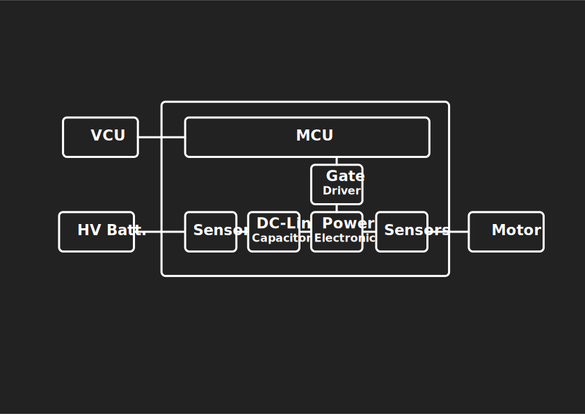

Abschlussvortrag
Brusa Inverter Studie
PPR vom 14.11.2017
Created by David Stadelmann
Vortragsinhalt?
- Projektinhalt
- Das etwas andere Organigramm
- Projektorganisation
- Herausforderungen
- Bewährtes
- Status
Projektinhalt?
Thema: Inverter, DC/DC converter
Studie 400h Aufwand fix (Projektgrösse B)
- System Design
- Development Toolchain
- Functional Safety
- Software Architektur
Sieht ja einfach aus...

Das etwas andere Organigramm?
Animiertes Organigramm
Projektorganisation?
- Einarbeitung in Domäne
- Workshops mit Fachabteilungsleitern
- Weekly TelCos
- Shared Wiki
Herausforderungen?
- Unterschiedliche Vorstellung der Ziele
- Vertrag sehr vage
- Sparringspartner abwesend, ausgelastet
- System Design, Funktionale Sicherheit
- Was kann ich als einzelner Beitragen?
- Was ist das Kernproblem?
- Neuer CEO vor Abschluss der Studie
- Wissensaufbau ist chaotisch
Bewährtes ... Rezept?
| 250g |
Mehl |
| 250g |
Butter |
| 250g |
Zucker |
| 1TL |
Backpulver |
| 4 |
Eier |
| 1 Prise |
Salz |
Im Ernst
- Ein Diskussionspartner
- Regelmässige TelCos und Meetings
- Protokolle
- Zuhören, sinnieren, reflektieren
Was hätte man besser machen können
- Offene ToDos auf den Protokollen wiederholen
- Transparentere Kommunikation zwischen den Parteien
- Verantwortlichkeiten als erstes klären und fixieren
Status
- Schlussbericht ausgeliefert
- Projekt abgeschlossen
- Zahlung ausstehend
- Folgeprojekt angeboten für 90k Fr.